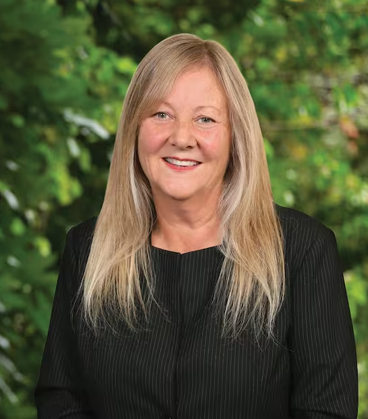

About Penny:
Penny Simmonds is the Member of Parliament for Invercargill, elected in 2020. She is currently the Minister for the Environment, Minister for Vocational Education, and Associate Minister for Social Development and Employment. Prior to her election to MP, Penny was Chief Executive of Southern Institute of Technology (SIT) from 1997 – 2020. Penny was an Advisory Board Member of Venture Southland, and has been involved in the Southland Regional Development Strategy since its inception and was on the Shareholders Advisory Board of the newly formed Economic Development Agency for Southland. She was a Trustee of Community Trust South from 2012 to 2019, and Chair from 2018 to 2019, and Director of Southern Lakes English College. She was Chair of Hockey Southland for 10 years finishing that role in 2017 when she also completed 2 years as President of New Zealand Hockey. Penny is also a former Director of the Southland Museum and Art Gallery and former Board Member of the Southland District Health Board and Southland disabilities Services. Penny was a recipient of the Woolf Fisher Fellowship in 2000. Penny was made a Companion of the New Zealand Order of Merit in the 2016 New Years’ Honours list. Penny is married with three adult daughters and four grandchildren.

Penny Simmonds is currently the MP for Invercargill and is currently running for candidacy again this election